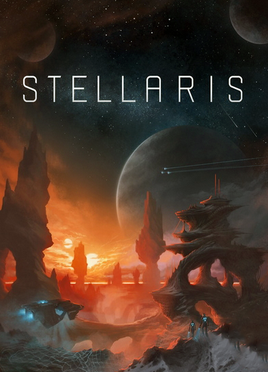
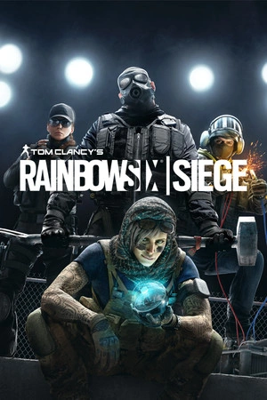

I am a big lover of videogames especially strategy games and simulator games, games that let me think and be creative basically. I have been playing games since my childhood with my first game Pokémon HeartGold. I made it all the way through that game loving every second of it, building my team of Pokémon, fighting the gym leaders and making my way to the elite four. From there I got more games for my ds and played more since there werent really any kids around my neighbourhood that were my age so it was more fun that being lonely and bored outside.
Now adays I play on my pc and play games like Stellaris a space simulator where you can form relations with other species as you grow your empire, fight other empires for resources and to grow or to support your allies and face universal dangers forcing you to ally yourself with your enemies to survive. I also like games like Rainbow 6 Siege a tactical swat like shooter where you and your team of players must face off against another team of players in a number of rounds either defending or attacking an objective.
Now how about I show you a short top 5 ranking of my current games that I am playing and why I like them
- 
I like Stellaris because it is challenging and challenges my mind with strategy in warfare, politics, resource management and those sorts of issues. You have to be able to think on multiple fronts and more than just one step at a time. I enjoy that challenge and working my brain, I enjoy surprising my enemies and being surprised by them and then having to figure out how best to respond. It should be no surprise however that I dont often play a peaceful civilisation because in a galactic warfare simulator, the pacifists are the first race to go.

I love Baldurs Gate 3 because its a turn based strategy game that is basically a videogame version of dnd. I play it a lot with my girlfriend and we have a great time working together (or at least trying to), making desicions together and seeing how the story will go. That is another element of Baldurs Gate 3 I love, the adaptability of the story. Every decision you make matters in dnd even ones that don't seem to matter in the moment can have huge influences later down the line like talking to an npc might get you recognised by them later in a completely different act of the game which could either help you or hurt you depending on the impression you left them with.

Elden ring is a bit of a different game from the ones above it but it no less is a very enjoyable game. Elden ring is not a strategy game per say but you do need to be smart while playing it. Elden Ring is a Souls Born game which means it is very difficult but also very rewarding, each boss in the game has different moves or mechanics that make them difficult to battle and even the normal enemies in the world can be quite challenging especially in the early game. However through hard work, gathering the right equipment and levelling up correctly you can overcome these challenges and succeed which is why I enjoy it. Because of the challenges I had to face and how difficult it was to achieve I felt proud to defeat each boss and even more so to have completed the game defeating the final boss.
- 
I enjoy Rainbow 6 Siege because it is a very team focused tactical game. You play as special forces officers hand picked from around the world for being the best of the best with unique gadget's and abilities and you must work together to face another team of special forces operators in a training simulation style game where you must either defend or attack an objective such as defending or defusing a bomb or defending or freeing a hostage. I love this game because it encourages teamwork, planning, choosing the right operator for the job and it is very much skill based so you can always improve and get better. I especially love playing it when I have friends because then the teamwork can get real and even having just one person who you know and can communicate well with can improve your games immensely.

I love master duel because it reminds me of my childhood. Everyday I would watch watch the kids show Yugioh GX where they play a card game that magically connects the monsters they summon and use to real monsters in another dimension and so a simple card game for fun turns into a the only way to save the world from world ending threats. Ridiculous as it sounds it was and still is an amazing show and Yugioh has went on to have many spin off series continuing the story with new protagonists and ways to play. And that's why I love master duel because it lets me feel like the protagonists in the show I loved to watch. Its also great that its a strategy card game where you have to build your deck as best you can, trying to think about what cards you need and what cards will help you get the card you need or support it once you play it. I love building my own decks and trying to figure out how to make them the best I can and also learning how best to play them.